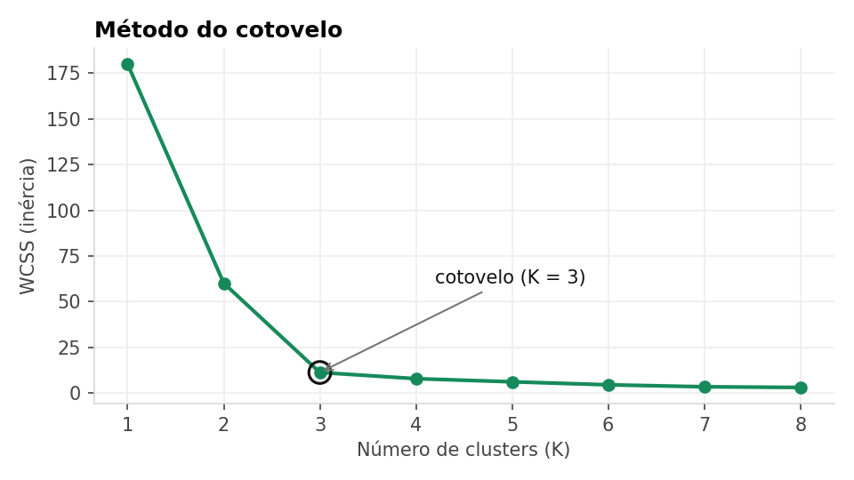
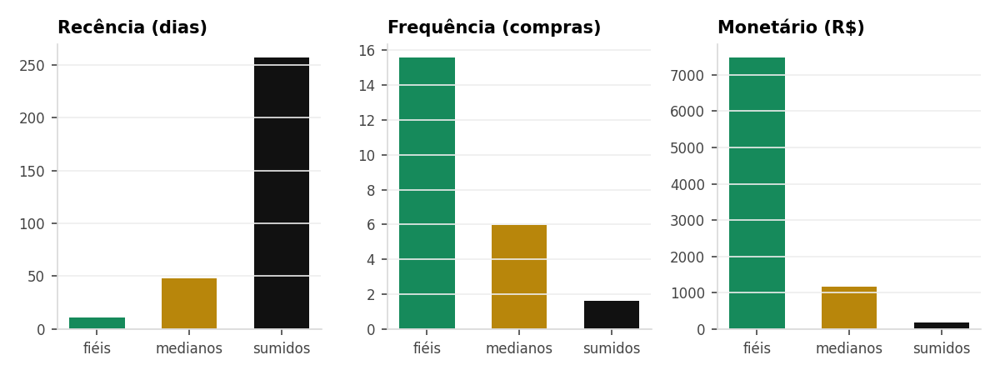
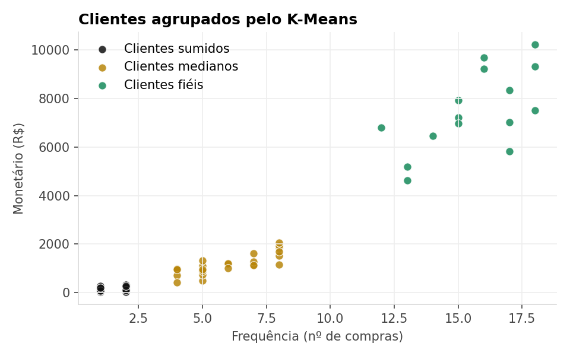

K-Means: segmentando clientes
Vamos pegar o histórico de compras de uma loja e deixar o computador separar os clientes em grupos parecidos, sem dizer a ele quais são os grupos.
Objetivos
Ao final desta aula você será capaz de:
- transformar uma lista de compras em uma tabela com um cliente por linha;
- escolher o número de grupos com o método do cotovelo;
- olhar a média de cada grupo e dar um nome para ele.
1. A ideia
Imagine que você tem uma loja e quer mandar uma promoção, mas não faz sentido mandar a mesma para todo mundo. Quem compra toda semana não precisa do mesmo desconto de quem sumiu há meses.
O K-Means ajuda nisso. Ele é um modelo não supervisionado: a gente não entrega as respostas prontas, ele mesmo procura grupos nos dados. O funcionamento é simples:
- Você escolhe quantos grupos quer (esse é o K).
- O modelo coloca K pontos no meio dos dados, os centros.
- Cada cliente vai para o centro mais perto dele.
- Os centros se movem para o meio do seu grupo. Repete o passo 3 e 4 até parar de mudar.
K-Means = agrupar coisas parecidas, medindo a distância entre elas.
2. Os dados
Usamos o arquivo compras.csv. Cada linha é um item comprado por um cliente. São 821 linhas, 415 compras e 60 clientes, de 05/10/2025 até 29/09/2026. Veja as primeiras linhas:
| InvoiceNo | InvoiceDate | Quantity | UnitPrice | CustomerID |
|---|---|---|---|---|
| 500001 | 2026-09-29 | 5 | 88.16 | 1001 |
| 500002 | 2026-07-16 | 2 | 97.28 | 1001 |
| 500002 | 2026-07-16 | 5 | 73.56 | 1001 |
| 500002 | 2026-07-16 | 4 | 87.14 | 1001 |
| 500003 | 2026-07-24 | 2 | 95.85 | 1001 |
| 500004 | 2026-07-29 | 3 | 52.44 | 1001 |
| 500004 | 2026-07-29 | 3 | 48.18 | 1001 |
| 500005 | 2026-08-20 | 1 | 68.72 | 1001 |
As três linhas destacadas têm o mesmo InvoiceNo (500002): foi uma única compra com três itens.
O que significa cada coluna:
| Coluna | O que é | Exemplo |
|---|---|---|
| InvoiceNo | Número da compra (nota). Uma compra pode ter vários itens, então o número se repete. | 500002 |
| InvoiceDate | Dia em que a compra foi feita. | 2026-07-16 |
| Quantity | Quantas unidades do item o cliente levou. | 5 |
| UnitPrice | Preço de uma unidade, em reais. | 73.56 |
| CustomerID | Código do cliente. É por ele que vamos agrupar tudo. | 1001 |
Repare que não existe uma coluna com o valor gasto. Vamos calcular: o total de cada linha é Quantity × UnitPrice. Na primeira linha, 5 × 88,16 = R$ 440,80.
3. O que é RFM
O K-Means precisa de números que descrevam cada cliente. Uma forma clássica no comércio é o RFM, três perguntas sobre o cliente:
| Letra | Nome | Pergunta | Como calculamos |
|---|---|---|---|
| R | Recência | Há quantos dias ele comprou pela última vez? | Última data do arquivo menos a última compra dele |
| F | Frequência | Quantas vezes ele comprou? | Contamos os números de compra diferentes |
| M | Monetário | Quanto ele gastou no total? | Somamos o Total de todos os itens |
Recência baixa é bom (comprou há pouco). Frequência e Monetário altos são bons.
4. Passo a passo
O código abaixo é o mesmo do notebook. Você pode ir copiando célula por célula no Google Colab.
Importar as bibliotecas
pandas mexe com tabelas, matplotlib faz os gráficos e o scikit-learn traz o K-Means.
# 1. Importar bibliotecas
import pandas as pd
import matplotlib.pyplot as plt
from sklearn.cluster import KMeans
from sklearn.preprocessing import StandardScaler
from google.colab import filesCarregar o arquivo
O files.upload() abre um botão para você escolher o compras.csv no seu computador. Depois o read_csv lê o arquivo, e parse_dates avisa que a coluna InvoiceDate é uma data, não um texto.
# 2. Enviar o arquivo compras.csv
files.upload()
df = pd.read_csv("compras.csv", parse_dates=["InvoiceDate"])
df.head()Apague as linhas from google.colab import files e files.upload() e deixe o compras.csv na mesma pasta do notebook.
Montar a tabela RFM
Primeiro criamos a coluna Total. Depois usamos o groupby para juntar todas as linhas de cada cliente e calcular R, F e M. A variável ref é a data da compra mais recente de todo o arquivo; ela é o nosso “hoje”.
# 3. Montar a tabela RFM (uma linha por cliente)
df["Total"] = df["Quantity"] * df["UnitPrice"]
ref = df["InvoiceDate"].max()
rfm = df.groupby("CustomerID").agg(
Recencia=("InvoiceDate", lambda d: (ref - d.max()).days),
Frequencia=("InvoiceNo", "nunique"),
Monetario=("Total", "sum"))
rfm.head()Resultado (5 primeiros clientes):
| CustomerID | Recencia | Frequencia | Monetario |
|---|---|---|---|
| 1001 | 0.0 | 13.0 | 4633.76 |
| 1002 | 17.0 | 16.0 | 9668.80 |
| 1003 | 11.0 | 18.0 | 7500.21 |
| 1004 | 18.0 | 15.0 | 7211.79 |
| 1005 | 3.0 | 15.0 | 7920.94 |
O cliente 1001, por exemplo, comprou no último dia do arquivo (recência 0), fez 13 compras e gastou R$ 4.633,76. Agora temos uma linha por cliente, que é o que o K-Means precisa.
Padronizar os dados
Olhe as escalas: recência vai até uns 300 (dias), frequência até 18 e monetário passa de 10 mil. Como o K-Means mede distância, o dinheiro ia “gritar” mais alto que as outras colunas. O StandardScaler coloca tudo numa escala parecida, para as três contarem igual.
# 4. Padronizar os dados
X = StandardScaler().fit_transform(rfm)Escolher o K
Quantos grupos? Testamos de 1 a 8 e anotamos o WCSS, que mede o quão espalhados estão os clientes dentro de cada grupo (quanto menor, mais juntinhos). Mais grupos sempre diminuem o WCSS, então procuramos o ponto em que a queda “estabiliza”, o cotovelo.
# 5. Método do cotovelo: qual K escolher?
wcss = []
for k in range(1, 9):
wcss.append(KMeans(n_clusters=k, random_state=42, n_init=10).fit(X).inertia_)
plt.plot(range(1, 9), wcss, marker="o")
plt.xlabel("Número de clusters (K)")
plt.ylabel("WCSS (inércia)")
plt.title("Método do cotovelo")
plt.show()
Aplicar o K-Means
Agora é só criar o modelo com n_clusters=3 e pedir para ele agrupar. O random_state=42 deixa o resultado igual toda vez que você rodar. O fit_predict devolve o grupo (0, 1 ou 2) de cada cliente, que guardamos na coluna Cluster.
# 6. Aplicar o K-Means com K = 3
modelo = KMeans(n_clusters=3, init="k-means++", random_state=42, n_init=10)
rfm["Cluster"] = modelo.fit_predict(X)Interpretar os grupos
O modelo só dá números: 0, 1 e 2. Quem dá sentido é a gente. Calculamos a média de R, F e M de cada grupo:
# 7. Interpretar: média de R, F e M de cada grupo
rfm.groupby("Cluster").mean().round(1)Resultado:
| Cluster | Recencia | Frequencia | Monetario | Clientes |
|---|---|---|---|---|
| 0 | 48.4 | 6.0 | 1169.6 | 25.0 |
| 1 | 10.6 | 15.6 | 7483.5 | 15.0 |
| 2 | 257.1 | 1.6 | 177.5 | 20.0 |

Ver no gráfico
Cada bolinha é um cliente, pintado com a cor do seu grupo.
# 8. Visualizar os grupos
plt.scatter(rfm["Frequencia"], rfm["Monetario"], c=rfm["Cluster"], cmap="viridis")
plt.xlabel("Frequência (nº de compras)")
plt.ylabel("Monetário (R$)")
plt.title("Clientes agrupados pelo K-Means")
plt.show()
5. Lendo o resultado
Olhando as médias, dá para dar um nome para cada grupo e pensar numa ação:
| Grupo | Clientes | Como são | O que fazer |
|---|---|---|---|
| Clientes fiéis | 15 | Compram quase toda semana e gastam bem mais que os outros. | Vale cuidar bem: programa de fidelidade, acesso antecipado a novidades. |
| Clientes medianos | 25 | Compram com certa regularidade, mas gastam pouco por cliente. | Dá para estimular: cupom para a próxima compra, combos. |
| Clientes sumidos | 20 | Compraram pouquíssimo e faz muito tempo que não aparecem. | Tentar reativar: mensagem de “sentimos sua falta” com desconto. |
Em outro computador ou versão da biblioteca, o grupo “fiéis” pode sair como 0 em vez de 1. Não decore o número: sempre olhe a tabela de médias para saber quem é quem.
6. Desafio
- Troque
n_clusters=3por 4 e rode de novo. Os grupos continuam fazendo sentido? Qual deles foi dividido? - Tire a coluna
Monetarioe agrupe só com Recência e Frequência. O resultado muda muito? - Pule a padronização (passo 4) e compare as médias. O que aconteceu?
Baixar arquivos
Notebook da aula
kmeans_rfm.ipynb tem todo o código acima, pronto para rodar.
Dados de compras
compras.csv com 821 linhas, o mesmo arquivo usado na aula. Você vai precisar dele quando o notebook pedir o upload.